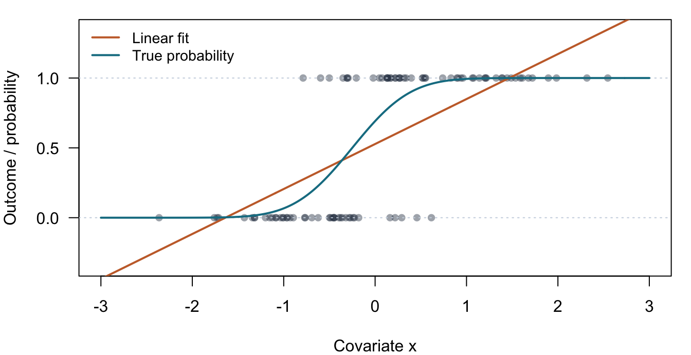
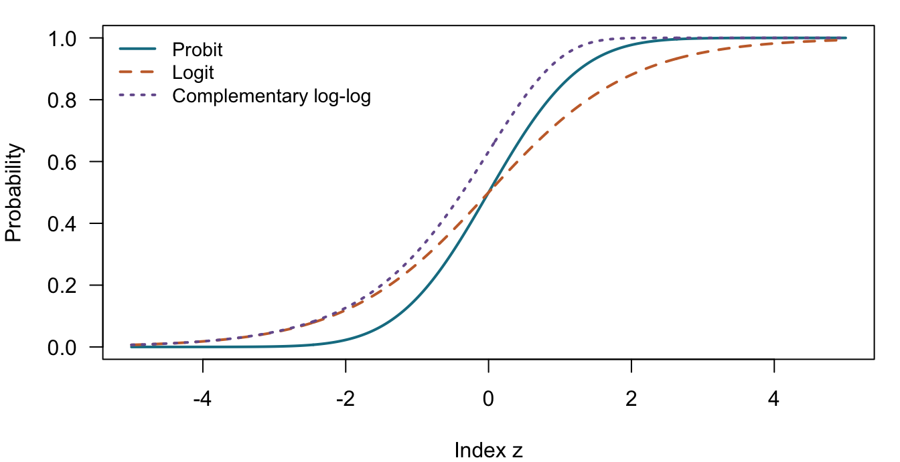
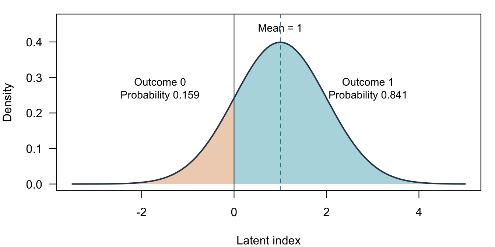
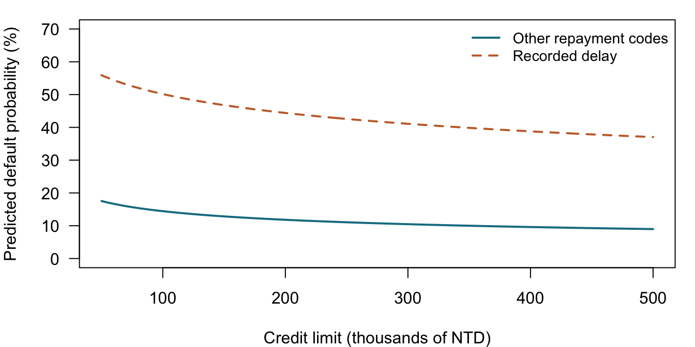
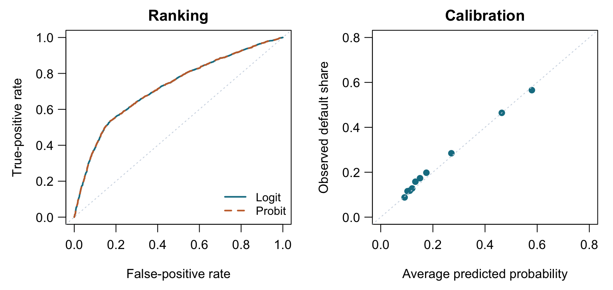

Chapter 7 Binary-choice models
Prerequisites. Conditional probability, Bernoulli variables, linear regression, and maximum-likelihood estimation.
After working through this chapter, you should be able to:
- Explain why a linear probability model has heteroskedastic disturbances and potentially inadmissible fitted values.
- Interpret probit and logit models through conditional probabilities and latent variables.
- Write and maximize the likelihood of a binary-choice model.
- Compute and interpret marginal effects.
- Compare models using likelihood-based measures and assess predictions with classification rates and ROC curves.
Roadmap. We start from the linear probability model and then introduce nonlinear probability functions. A latent-variable representation motivates probit and logit specifications. The remaining sections cover estimation, marginal effects, goodness of fit, and predictive evaluation before the exercises in Section 7.8.
Many economic outcomes are qualitative rather than continuous: a household defaults or does not, an individual participates or does not, and a firm enters a market or stays out. When \(y_i\in\{0,1\}\), the object to model is the conditional probability \(\mathbb{P}(y_i=1\mid\mathbf{x}_i)\). The covariates are collected in a \(K\times1\) vector \(\mathbf{x}_i\).
Examples include participation in the labour force, market entry, and the occurrence of a credit default. A binary outcome need not represent a deliberate choice.
We specify a Bernoulli model: \[\begin{equation} y_i | \mathbf{X} \sim \mathcal{B}(g(\mathbf{x}_i;\boldsymbol\theta)). \end{equation}\] where \(g(\mathbf{x}_i;\boldsymbol\theta)\) is the parameter of the Bernoulli distribution. In other words, conditionally on \(\mathbf{X}\): \[\begin{equation} y_i = \left\{ \begin{array}{cl} 1 & \mbox{ with probability } g(\mathbf{x}_i;\boldsymbol\theta)\\ 0 & \mbox{ with probability } 1-g(\mathbf{x}_i;\boldsymbol\theta), \end{array} \right.\tag{7.1} \end{equation}\] where \(\boldsymbol\theta\) is a vector of parameters to be estimated.
An estimation strategy is to assume that \(g(\mathbf{x}_i;\boldsymbol\theta)\) can be proxied by \(\tilde{\boldsymbol\theta}'\mathbf{x}_i\) and to run a linear regression to estimate \(\tilde{\boldsymbol\theta}\) (a situation called Linear Probability Model, LPM): \[ y_i = \tilde{\boldsymbol\theta}'\mathbf{x}_i + \varepsilon_i. \] If the conditional probability is truly linear, OLS consistently estimates its coefficients; if it is nonlinear, OLS instead estimates the coefficients of the best linear projection. The fitted values can fall below zero or above one. Moreover, because \(\mathbb{V}ar(y_i\mid\mathbf{x}_i)=p_i(1-p_i)\), the disturbances are generally heteroskedastic, so heteroskedasticity-robust standard errors should be used. The disturbances cannot be conditionally Gaussian because \(y_i\in\{0,1\}\).
Figure 7.1 uses simulated observations to compare the linear fit with the probability function that generated the data. A straight line cannot flatten towards both zero and one.

Figure 7.1: A linear fit and the true probability in a simulated sample of 100 observations. The generating probability is \(\Phi(0.5+2x)\), with standard normal covariates.
Nonlinear models instead map an index \(z_i=\boldsymbol\theta'\mathbf{x}_i\) into a probability \(p_i=g(z_i)\). Table 7.1 gives common choices. Here \(\Phi\) and \(\phi\) denote the standard normal distribution and density functions.
| Model | \(g(z)\) | \(g'(z)\) |
|---|---|---|
| Probit | \(\Phi(z)\) | \(\phi(z)\) |
| Logit | \([1+\exp(-z)]^{-1}\) | \(g(z)[1-g(z)]\) |
| Complementary log-log | \(1-\exp[-\exp(z)]\) | \(\exp[z-\exp(z)]\) |
| Linear (LPM) | \(z\) | \(1\) |
The probit and logit models use, respectively, \[\begin{equation} g(z)=\Phi(z), \tag{7.2} \end{equation}\] and \[\begin{equation} g(z)=\frac{1}{1+\exp(-z)}. \tag{7.3} \end{equation}\] Both keep probabilities between zero and one. Their coefficients have different scales, so comparisons should focus on predicted probabilities and marginal effects. The complementary log-log link is asymmetric (Figure 7.2).

Figure 7.2: Three links from an index to a probability. Probit and logit are symmetric around zero; the complementary log-log link is asymmetric.
7.1 Latent-variable and utility interpretations
Probability functions specify how covariates map into observed choices. A latent-variable representation supplies an economic interpretation: the observed binary outcome records whether an unobserved index crosses a threshold.
The probit model has an interpretation in terms of latent variables, which, in turn, is often exploited in structural models, called Random Utility Models (RUM). In such structural models, it is assumed that the agents that have to take the decision do so by selecting the outcome that provides them with the larger utility (for agent \(i\), two possible outcomes: \(y_i=0\) or \(y_i=1\)). Part of this utility is observed by the econometrician —it depends on the covariates \(\mathbf{x}_i\)— and part of it is latent.
In the probit model, we have: \[ \mathbb{P}(y_i=1|\mathbf{x}_i;\boldsymbol\theta) = \Phi(\boldsymbol\theta'\mathbf{x}_i) = \mathbb{P}(-\varepsilon_{i}<\boldsymbol\theta'\mathbf{x}_i), \] where \(\varepsilon_{i} \sim \mathcal{N}(0,1)\). That is: \[ \mathbb{P}(y_i=1|\mathbf{x}_i;\boldsymbol\theta) = \mathbb{P}(0< y_i^*), \] where \(y_i^* = \boldsymbol\theta'\mathbf{x}_i + \varepsilon_i\), with \(\varepsilon_{i} \sim \mathcal{N}(0,1)\). Variable \(y_i^*\) can be interpreted as a (latent) variable that determines \(y_i\) (since \(y_i = \mathbb{I}_{\{y_i^*>0\}}\)).
Figure 7.3 illustrates this situation.

Figure 7.3: A latent normal index with mean one and variance one. The area to the right of zero is the probability of observing outcome one.
Assume that agent (\(i\)) chooses \(y_i=1\) if the utility associated with this choice (\(U_{i,1}\)) is higher than the one associated with \(y_i=0\) (that is \(U_{i,0}\)). Assume further that the utility of agent \(i\), if she chooses outcome \(j\) (\(\in \{0,1\}\)), is given by \[ U_{i,j} = V_{i,j} + \varepsilon_{i,j}, \] where \(V_{i,j}\) is the deterministic component of the utility associated with choice and where \(\varepsilon_{i,j}\) is a random (agent-specific) component. Moreover, posit \(V_{i,j} = \boldsymbol\theta_j'\mathbf{x}_i\). We then have: \[\begin{eqnarray} \mathbb{P}(y_i = 1|\mathbf{x}_i;\boldsymbol\theta) &=& \mathbb{P}(\boldsymbol\theta_1'\mathbf{x}_i+\varepsilon_{i,1}>\boldsymbol\theta_0'\mathbf{x}_i+\varepsilon_{i,0}) \nonumber\\ &=& F(\boldsymbol\theta_1'\mathbf{x}_i-\boldsymbol\theta_0'\mathbf{x}_i) = F([\boldsymbol\theta_1-\boldsymbol\theta_0]'\mathbf{x}_i),\tag{7.4} \end{eqnarray}\] where \(F\) is the c.d.f. of \(\varepsilon_{i,0}-\varepsilon_{i,1}\).
Note that only the difference \(\boldsymbol\theta_1-\boldsymbol\theta_0\) is identifiable (as opposed to \(\boldsymbol\theta_1\) and \(\boldsymbol\theta_0\)). Moreover, replacing \(U\) with \(aU\) (\(a>0\)) gives the same model; this scaling issue can be solved by fixing the variance of \(\varepsilon_{i,0}-\varepsilon_{i,1}\).
Example 7.1 (Migration and income) The RUM approach has been used by Nakosteen and Zimmer (1980) to study migration choices. Their model is based on the comparison of marginal costs and benefits associated with migration. The main ingredients of their approach are as follows:
- Wage that can be earned at the present location: \(y_p^* = \boldsymbol\theta_p'\mathbf{x}_p + \varepsilon_p\).
- Migration cost: \(C^*= \boldsymbol\theta_c'\mathbf{x}_c + \varepsilon_c\).
- Wage earned elsewhere: \(y_m^* = \boldsymbol\theta_m'\mathbf{x}_m + \varepsilon_m\).
In this context, agents decide to migrate if \(y_m^* > y_p^* + C^*\), i.e. if \[ y^* = y_m^* - y_p^* - C^* = \boldsymbol\theta'\mathbf{x} + \underbrace{\varepsilon}_{=\varepsilon_m - \varepsilon_c - \varepsilon_p}>0, \] where \(\mathbf{x}\) is the union of the \(\mathbf{x}_i\)s, for \(i \in \{p,m,c\}\).
7.2 Alternative-varying regressors
When attributes such as fares and travel times vary across alternatives, specify utility for each available choice.
For instance, let \(\mathbf{u}_{i,j}\) collect the fare and travel time of alternative \(j\) for traveller \(i\), while \(\mathbf{v}_i\) collects characteristics of the traveller. A specification with common coefficients on alternative attributes is \[ V_{i,j}={\theta^{(u)}}'\mathbf{u}_{i,j}+{\theta_j^{(v)}}'\mathbf{v}_i. \] Taking the difference between utilities gives \[\begin{equation} \mathbb{P}(y_i=1\mid\mathbf{x}_i)=F\left({\theta^{(u)}}'(\mathbf{u}_{i,1}-\mathbf{u}_{i,0})+ [\theta_1^{(v)}-\theta_0^{(v)}]'\mathbf{v}_i\right). \tag{7.5} \end{equation}\] Thus it is the difference in attributes that enters the binary model.
Example 7.2 (Train or bus?) Consider a hypothetical journey with the following options:
| Attribute | Train (\(j=1\)) | Bus (\(j=0\)) | Train minus bus |
|---|---|---|---|
| Fare (CHF) | 12 | 8 | 4 |
| Travel time (minutes) | 25 | 40 | \(-15\) |
A logit specification might assign the train probability \[ \mathbb{P}(y_i=1)=\Lambda\big(\alpha+\beta_c(c_{i,1}-c_{i,0})+ \beta_t(t_{i,1}-t_{i,0})\big), \] where \(\Lambda\) is the logistic distribution function. For this journey the index is \(\alpha+4\beta_c-15\beta_t\). With negative fare and time coefficients, the higher fare lowers the train probability while the shorter journey raises it. These are illustrative attributes, not an estimated model. Estimation would require observations on choices and on the attributes of both available alternatives.
7.3 Estimation
Once the probability function has been specified, its parameters can be estimated by maximum likelihood. Each observation contributes the probability assigned to the outcome that actually occurred.
Condition on the covariates and assume independent outcomes across entities. Write \(p_i=g(\boldsymbol\theta'\mathbf{x}_i)\). The conditional probability of the observed outcome is \(p_i^{y_i}(1-p_i)^{1-y_i}\), giving the log-likelihood \[ \ell(\boldsymbol\theta)=\sum_{i=1}^n \left[y_i\log p_i+(1-y_i)\log(1-p_i)\right]. \] Its score is \[ \frac{\partial\ell}{\partial\boldsymbol\theta} =\sum_{i=1}^n\mathbf{x}_i\frac{(y_i-p_i)g'(\boldsymbol\theta'\mathbf{x}_i)}{p_i(1-p_i)}. \] Numerical maximization finds the coefficient vector for which this score is zero. In the logit model, \(g'=p_i(1-p_i)\), so the score simplifies to \(\mathbf{X}'(\mathbf{y}-\mathbf{p})\) and the Hessian is \[ \frac{\partial^2\ell}{\partial\boldsymbol\theta\partial\boldsymbol\theta'} =-\sum_{i=1}^n p_i(1-p_i)\mathbf{x}_i\mathbf{x}_i'. \] The log-likelihood is concave. Full column rank gives strict concavity at finite coefficients, but a finite maximum may fail to exist when regressors perfectly separate the two outcomes.
Under the regularity conditions of Section 6.2, the MLE is approximately normal with covariance equal to the inverse information matrix. For either link, the conditional expected information is \[ \mathbf{I}(\boldsymbol\theta\mid\mathbf{X})= \sum_{i=1}^n\frac{[g'(\boldsymbol\theta'\mathbf{x}_i)]^2}{p_i(1-p_i)} \mathbf{x}_i\mathbf{x}_i'. \] Evaluating its inverse at the estimates gives an estimated covariance matrix under the specified Bernoulli model.
Example 7.3 (Predicting next-month credit defaults) We return to AEC::UCIcredit, described in Appendix 10.4. Each of the 30,000 rows records one cardholder and whether a default payment was recorded in the following month. We ask whether the recorded credit limit, age, and latest repayment status help predict this outcome.
We use three predictors: the log of the credit limit (measured relative to NTD 100,000), age in decades relative to age 40, and an indicator for a recorded payment delay in September (PAY_0 >= 1). The credit limit is the amount of credit available on the card, not income or the outstanding balance. The comparison group for the delay indicator includes all other repayment codes; some of these codes are undocumented, so it should not be described as a group with no repayment problems.
We randomly reserve 9,000 cardholders for evaluation and estimate all models on the remaining 21,000. The reserved outcomes are used only in Section 7.6. This split evaluates predictions for other clients in the same collection of observations.
Code
credit_binary <- transform(AEC::UCIcredit,
default = default_next_month,
log_limit = log(LIMIT_BAL / 100000),
age10 = (AGE - 40) / 10,
delay = as.integer(PAY_0 >= 1))
training_rows <- sample.int(nrow(credit_binary), 21000)
credit_train <- credit_binary[training_rows, ]
credit_test <- credit_binary[-training_rows, ]
credit_null <- glm(default ~ 1, data=credit_train, family=binomial())
credit_basic <- glm(default ~ log_limit + age10, data=credit_train,
family=binomial())
credit_logit <- glm(default ~ log_limit + age10 + delay,
data=credit_train, family=binomial())
credit_probit <- update(credit_logit, family=binomial(link="probit"))The same three predictors enter the logit and probit specifications. Table 7.2 reports their estimates and standard errors. A positive coefficient raises the predicted probability, holding the other predictors fixed; coefficient magnitudes across links are not directly comparable.
Code
binary_coefficients <- data.frame(
Predictor=c("Constant", "Log credit limit", "Age (decades)", "Recorded delay"),
Logit=coef(credit_logit),
`SE logit`=sqrt(diag(vcov(credit_logit))),
Probit=coef(credit_probit),
`SE probit`=sqrt(diag(vcov(credit_probit))), check.names=FALSE)
data_table(binary_coefficients, digits=3, row.names=FALSE,
caption="Credit-default models: estimates and standard errors (21,000 training observations).")| Predictor | Logit | SE logit | Probit | SE probit |
|---|---|---|---|---|
| Constant | -1.779 | 0.025 | -1.055 | 0.013 |
| Log credit limit | -0.334 | 0.019 | -0.191 | 0.011 |
| Age (decades) | 0.085 | 0.019 | 0.049 | 0.011 |
| Recorded delay | 1.786 | 0.038 | 1.059 | 0.022 |
The delay coefficient is positive in both models. The following sections translate this association into probability differences and assess whether it improves predictions.
7.4 Marginal effects
The coefficients of probit and logit models affect a latent index, so they are not themselves changes in probability. Marginal effects translate coefficient estimates back into the probability scale and generally depend on the covariate values.
How to measure marginal effects, i.e. the effect on the probability that \(y_i=1\) of a marginal increase of \(x_{i,k}\)? This object is given by: \[ \frac{\partial \mathbb{P}(y_i=1|\mathbf{x}_i;\boldsymbol\theta)}{\partial x_{i,k}} = \underbrace{g'(\boldsymbol\theta'\mathbf{x}_i)}_{>0}\theta_k, \] which is of the same sign as \(\theta_k\) if function \(g\) is monotonously increasing.
This derivative applies when \(x_{i,k}\) enters the index linearly, without transformations or interactions. Two summaries are common: evaluate it at the mean covariate vector (marginal effect at the means), or average the individual derivatives (average marginal effect, AME). The latter keeps each observation’s covariate combination; the former can describe an artificial profile, especially with categorical predictors.
For a binary predictor, use a finite difference instead: predict each observation once with that predictor set to one and once with it set to zero, holding the other predictors fixed, then average the differences. For a transformed continuous predictor, recompute its transformations when changing the underlying variable.
Example 7.4 (From coefficients to probabilities) In our credit model, the AME of age10 is the average link derivative times its coefficient. It is a local slope per decade. For the credit limit we instead compare probabilities before and after a 10% increase, which adds \(\log(1.1)\) to log_limit. For the delay indicator we compare its two possible values. All three summaries average over the training sample and describe model-implied associations.
Code
credit_effects <- function(model) {
eta <- predict(model, newdata=credit_train, type="link")
base <- predict(model, newdata=credit_train, type="response")
higher <- transform(credit_train, log_limit=log_limit + log(1.1))
delayed <- transform(credit_train, delay=1L)
other <- transform(credit_train, delay=0L)
c(mean(model$family$mu.eta(eta)) * coef(model)[["age10"]],
mean(predict(model, higher, type="response") - base),
mean(predict(model, delayed, type="response") -
predict(model, other, type="response"))) * 100
}
data_table(data.frame(
Comparison=c("Age: local slope per decade", "Credit limit: +10%",
"Recorded delay: 0 to 1"),
Logit=credit_effects(credit_logit), Probit=credit_effects(credit_probit)),
digits=2, row.names=FALSE,
caption="Average changes in predicted default probability (percentage points).")| Comparison | Logit | Probit |
|---|---|---|
| Age: local slope per decade | 1.23 | 1.24 |
| Credit limit: +10% | -0.45 | -0.46 |
| Recorded delay: 0 to 1 | 34.14 | 34.31 |
For example, the logit comparison for recorded delay is about 34.1 percentage points. A 10% higher credit limit corresponds to a much smaller change, about -0.45 percentage points.
A percentage-point change is a difference between probabilities multiplied by 100; it is not a percentage change in risk. The large contrast for recorded delay summarizes a strong predictive association, rather than the effect of an intervention on repayment behaviour.
Figure 7.4 illustrates why a single coefficient does not imply a constant probability difference. It holds age at 40 and varies the credit limit and delay indicator.

Figure 7.4: Logit predictions at age 40. Curves differ only in the recorded-delay indicator; the comparison group includes all other repayment codes.
7.5 Goodness of fit
After interpreting individual coefficients, we turn to the performance of the model as a whole. For binary outcomes, fit can be assessed through likelihood-based measures, calibration, and the quality of probability predictions.
McFadden’s pseudo-\(R^2\) compares the maximized log-likelihood \(\widehat\ell\) with that of an intercept-only model, \(\widehat\ell_0\), on the same observations: \[ R^2_{MF}=1-\frac{\widehat\ell}{\widehat\ell_0}. \] A value of zero means that the fitted model does no better in likelihood terms than the constant-probability benchmark. This measure is not a fraction of variance explained and does not evaluate predictions on new observations.
Example 7.5 (Does repayment status add information?) We compare the intercept-only logit model, the model with credit limit and age, and the model that also includes recorded delay.
Code
credit_fits <- list("Constant only"=credit_null,
"Limit + age"=credit_basic,
"Limit + age + delay"=credit_logit)
data_table(data.frame(
Specification=names(credit_fits),
`Log-likelihood`=vapply(credit_fits, function(m) as.numeric(logLik(m)), 0),
`Pseudo-R2`=vapply(credit_fits, function(m)
1-as.numeric(logLik(m)/logLik(credit_null)), 0), check.names=FALSE),
digits=c(0,1,3), row.names=FALSE,
caption="Within-sample fit of nested logit specifications.")| Specification | Log-likelihood | Pseudo-R2 |
|---|---|---|
| Constant only | -11005.3 | 0.000 |
| Limit + age | -10679.9 | 0.030 |
| Limit + age + delay | -9543.0 | 0.133 |
Code
Adding recorded delay gives a likelihood-ratio statistic of 2273.7. Against the \(\chi^2_1\) reference distribution, the p-value is below 0.001: delay contributes information conditional on limit and age. Section 7.6 checks predictions on reserved observations.
7.6 Predictions and ROC curves
A predicted probability becomes a classification only after a threshold is chosen. ROC curves summarize the trade-off between true- and false-positive rates across all possible thresholds, separating the model’s ranking ability from any single decision rule.
To classify an outcome, choose a threshold \(c\) and set \(\widehat y_i=1\) when \(\widehat p_i\geq c\). A lower threshold detects more positive outcomes but also produces more false alarms. The appropriate trade-off depends on the consequences of the two mistakes.
The receiver operating characteristic (ROC) curve plots the true-positive rate against the false-positive rate as the threshold varies: \[ \mathrm{TPR}=\frac{\text{correctly flagged positives}}{\text{all positives}}, \qquad \mathrm{FPR}=\frac{\text{incorrectly flagged negatives}}{\text{all negatives}}. \] A threshold above every score gives \((0,0)\); one below every score gives \((1,1)\). Random ranking has a diagonal ROC in expectation. The area under the curve (AUC) measures ranking quality: it is the probability that a randomly selected positive receives a higher score than a randomly selected negative, counting ties as one half.
Ranking is only one aspect of a probability forecast. Calibration asks whether outcomes occur at the predicted frequencies: among observations assigned a probability near 0.2, approximately one fifth should have outcome one. The Brier score, \(n^{-1}\sum_i(y_i-\widehat p_i)^2\), assesses probability accuracy; smaller values are better.
Example 7.6 (Evaluating predictions for reserved cardholders) We now predict outcomes for the 9,000 cardholders excluded from estimation. The benchmark assigns every client the default share in the training sample. None of these models is refitted on the evaluation sample.
Code
credit_test_predictions <- data.frame(
Benchmark=rep(mean(credit_train$default), nrow(credit_test)),
Logit=predict(credit_logit, credit_test, type="response"),
Probit=predict(credit_probit, credit_test, type="response"))
credit_auc <- function(y, p) {
n1 <- sum(y==1); n0 <- sum(y==0)
(sum(rank(p, ties.method="average")[y==1])-n1*(n1+1)/2)/(n1*n0)
}
data_table(data.frame(
Model=names(credit_test_predictions),
Brier=vapply(credit_test_predictions, function(p)
mean((credit_test$default-p)^2), 0),
AUC=vapply(credit_test_predictions, function(p)
credit_auc(credit_test$default,p), 0)),
digits=3, row.names=FALSE,
caption="Probability accuracy and ranking on 9,000 reserved observations.")| Model | Brier | AUC |
|---|---|---|
| Benchmark | 0.177 | 0.500 |
| Logit | 0.152 | 0.723 |
| Probit | 0.152 | 0.723 |
Both fitted models reduce the Brier score relative to the constant-probability benchmark. Their AUC is about 0.72: they rank defaults above non-defaults more often than chance, while leaving substantial uncertainty. The two links give similar predictive performance. Their ROC curves and the logit’s calibration plot appear in Figure 7.5. A good ranking does not guarantee calibration: the left panel compares clients with one another, while the right panel compares probabilities with observed frequencies.

Figure 7.5: Evaluation on reserved observations. Left: ROC curves for logit and probit. Right: observed default frequencies against average logit predictions in ten equally sized groups ranked by predicted probability. The diagonal represents perfect calibration.
Finally, consider two illustrative logit thresholds, 0.5 and 0.2. They are specified for comparison, rather than selected to maximize performance on the reserved outcomes.
Code
credit_classification <- do.call(rbind,lapply(c(.5,.2), function(cutoff) {
flagged <- credit_test_predictions$Logit >= cutoff
y <- credit_test$default
data.frame(Threshold=cutoff, TP=sum(flagged & y==1),
FP=sum(flagged & y==0), FN=sum(!flagged & y==1),
TN=sum(!flagged & y==0),
TPR=mean(flagged[y==1]), FPR=mean(flagged[y==0]))
}))
data_table(credit_classification, digits=c(1,0,0,0,0,3,3),row.names=FALSE,
caption="Logit classifications: true positives (TP), false positives (FP), false negatives (FN), and true negatives (TN).")| Threshold | TP | FP | FN | TN | TPR | FPR |
|---|---|---|---|---|---|---|
| 0.5 | 583 | 449 | 1480 | 6488 | 0.283 | 0.065 |
| 0.2 | 1164 | 1424 | 899 | 5513 | 0.564 | 0.205 |
Lowering the threshold detects more defaults and flags more clients who do not default. Overall classification accuracy alone can be misleading: predicting no default for everyone would already be correct for 77.1% of these clients, while detecting none of the defaults. The table makes both types of error visible.
7.7 Chapter recap
- The LPM can give predictions outside \([0,1]\) and requires robust inference. Probit and logit use bounded probability functions (Figure 7.1).
- Latent indices and utility differences motivate binary-choice models; alternative-specific attributes enter through utility comparisons (Sections 7.1 and 7.2).
- Maximum likelihood estimates index coefficients. Derivatives and finite differences translate them into probability comparisons (Sections 7.3 and 7.4).
- Within-sample fit, ranking, calibration and classification answer different questions. Reserved observations assess predictive performance (Sections 7.5 and 7.6).
7.8 Exercises
Attempt each question and explain your reasoning, including for true-or-false statements. Foundation exercises apply a result directly; Standard exercises require several steps or a short proof; Advanced exercises combine several results or require a longer derivation. Worked solutions and exercise-specific hints are reserved for teaching sessions and are not included in this student edition.
Exercise 7.1 (Ordered-probit model) Advanced | Analytical
Review Section 7.1.
Let \(y_i\in\{1,\dots,Z\}\) be an ordered outcome observed for entities \(i=1,\dots,n\). Each entity has a \(K\)-dimensional covariate vector \(\mathbf{x}_i\). Assume that \((\mathbf{x}_i,y_i)\) and \((\mathbf{x}_j,y_j)\) are independent whenever \(i\ne j\).
To avoid a redundant location parameter, assume that \(\mathbf{x}_i\) does not contain a constant.
For each entity \(i\), the probability that \(y_i = k\) (with \(k \in \{1, \dots, Z\}\)) is a function of \(\mathbf{x}_i\). Specifically, there exist functions \(g_1, g_2, \dots, g_Z\) that are such that:
\[\mathbb{P}(y_i = k | \mathbf{x}_i) = g_k(\boldsymbol{\beta}' \mathbf{x}_i),\]
where \(\boldsymbol{\beta}\) is a \(K\)-dimensional vector.
Provide examples of situations where a variable of interest \(y_i\) can take a finite number of values.
Provide an example of a situation where the assumption according to which the \((\mathbf{x}_i, y_i)\) are independent across entities \(i\) would not be satisfied.
What is the relationship that should be satisfied by \(g_1(x), g_2(x), \dots, g_Z(x)\)?
Introduce the latent variable \(y_i^*\):
\[y_i^* = \boldsymbol{\beta}'\mathbf{x}_i + \varepsilon_i,\]
where \(\varepsilon_i \sim i.i.d. \mathcal{N}(0,1)\). Define \(\alpha_j\), for \(j \in \{1, \dots, Z-1\}\), such that \(\alpha_1 < \alpha_2 < \dots < \alpha_{Z-1}\). We also employ the notation \(\alpha_0 = -\infty\) and \(\alpha_Z = +\infty\). The observed outcome is linked to the latent variable by \(y_i=k\) if and only if \(\alpha_{k-1}<y_i^*\leq\alpha_k\).
Using \(\Phi\) (the c.d.f. of the standard normal distribution), express \(\mathbb{P}(y_i^* \in ]\alpha_{k-1}, \alpha_k[ | \mathbf{x}_i)\), for \(k \in \{1, \dots, Z\}\).
Show that the \(\psi_k\) functions defined, for \(k \in \{1, \dots, Z\}\), by:
\[\psi_k: \quad x \to \mathbb{P}(y_i^* \in ]\alpha_{k-1}, \alpha_k[ | \boldsymbol{\beta}' \mathbf{x}_i = x),\]
satisfy the relationship obtained in question 3.
Let \(\boldsymbol{\theta}\) denote the vector of parameters defining the model, that is \(\boldsymbol{\theta} = [\boldsymbol{\beta}', \alpha_1, \dots, \alpha_{Z-1}]'\). Using \(\Phi\), express \(f(y_i | \mathbf{x}_i; \boldsymbol{\theta})\), the distribution of \(y_i\) conditional on \(\mathbf{x}_i\). Deduce the expression of the log-likelihood \(\log \mathcal{L}(\boldsymbol{\theta}; \mathbf{y})\) associated with \(\mathbf{y} = \{y_1, \dots, y_n\}\) (conditional on \(\mathbf{x} = \{\mathbf{x}_1, \dots, \mathbf{x}_n\}\)).
Explain how one could obtain estimates of \(\boldsymbol{\theta}\) (denoted by \(\hat{\boldsymbol{\theta}}\)) and how one could estimate the standard deviations associated with \(\hat{\boldsymbol{\theta}}\).
Suppose that one has estimated two versions of such a model. In the first version (Model 1), vectors \(\mathbf{x}_i\) are of dimension 3; in the second model (Model 2), two potential explanatory variables are added, in such a way that the \(\mathbf{x}_i\) are of dimension 5. While the maximum log-likelihood associated with Model 1 is \(\max \log \mathcal{L}_1 = -518.3\), the one associated with Model 2 is \(\max \log \mathcal{L}_2 = -517.1\).
Explain why it is not possible to have \(\max \log \mathcal{L}_2 < \max \log \mathcal{L}_1\).
Using a \(\chi^2\) distribution table, what can you say about these two additional explanatory variables?
Exercise 7.2 (Comparing probit specifications: true or false?) Standard | True or false
Review Section 7.4.
A binary choice model is estimated. There are \(n\) observations of the dependent binary variable \(y_i\) (i.e., each \(y_i\) is either 0 or 1). For each entity \(i\), there are 6 explanatory variables: \(\mathbf{x}_i = [x_{i,1}, \dots, x_{i,6}]'\), with \(x_{i,1} = 1\) (thus using a constant). The model is:
\[\mathbb{P}(y_i = 1 | \mathbf{x}_i; \boldsymbol{\theta}) = \Phi(\boldsymbol{\theta}'\mathbf{x}_i)\]
where \(\Phi\) is the cumulative distribution function (c.d.f.) of \(\mathcal{N}(0, 1)\). We have \(\boldsymbol{\theta} = [\theta_1, \dots, \theta_6]'\).
Three versions of the model are considered, all estimated by maximum likelihood:
Version A: Includes all 6 explanatory variables. The maximum log-likelihood value obtained is \(-120\).
Version B: Removes 3 explanatory variables by imposing \(\theta_4 = \theta_5 = \theta_6 = 0\). The maximum log-likelihood value obtained is \(-125\).
Version C: Uses only a constant. This is equivalent to imposing \(\theta_2 = \theta_3 = \theta_4 = \theta_5 = \theta_6 = 0\). The maximum log-likelihood value obtained is \(-160\).
For each statement, decide whether it is true or false and justify your answer.
In this model, we have \(\mathbb{P}(y_i = 1 | \mathbf{x}_i; \boldsymbol{\theta}) = \mathbb{P}(y_i^* > 0 | \mathbf{x}_i; \boldsymbol{\theta})\), where \(y_i^* = \boldsymbol{\theta}'\mathbf{x}_i + \varepsilon_i\), with \(\varepsilon_i \sim \mathcal{N}(0, 1)\).
The McFadden pseudo-\(R^2\) associated with model A is 40%.
A likelihood ratio test (LR test) is used to test the restrictions when moving from model A to model B. The test leads to rejecting the restricted model (model B) at the 1% level (i.e., for a test size of 1%).
The McFadden pseudo-\(R^2\) associated with model B is greater than that associated with model A.
If \(\theta_2 > 0\), then an increase in \(x_{i,2}\) by one unit (all else equal) implies an increase in \(\mathbb{P}(y_i = 1 | \mathbf{x}_i; \boldsymbol{\theta})\).
Exercise 7.3 (Probit maximum likelihood: true or false?) Advanced | True or false
Review Section 7.4.
Consider a random variable whose observations \(y_i\) are independent and drawn from a Bernoulli distribution with parameter \(\Phi(\boldsymbol{\theta}'\mathbf{x}_i)\), where \(\Phi\) is the c.d.f. of a standard normal distribution \(\mathcal{N}(0,1)\).
The explanatory variables \(\mathbf{x}_i=[x_{i,1},\dots,x_{i,K}]'\) are regarded as non-random variables. The parameter vector \(\boldsymbol{\theta}=[\theta_1,\dots,\theta_K]'\) is estimated by Maximum Likelihood. The number of observations is large.
For each statement, decide whether it is true or false and justify your answer.
The conditional variance of \(y_i\) given \(\mathbf{x}_i\) is strictly larger than 1.
If \(\theta_1>0\), an increase in \(x_{i,1}\) (everything else equal) necessarily leads to a decrease in \(\mathbb{P}(y_i=1|\mathbf{x}_i)\).
\(\mathbb{E}(y_i|\mathbf{x}_i;\boldsymbol{\theta})=\Phi(\boldsymbol{\theta}'\mathbf{x}_i)\).
By adding three explanatory variables (\(x_{i,K+1}\), \(x_{i,K+2}\), and \(x_{i,K+3}\)), the maximum log-likelihood increases by 2.5. A likelihood ratio test at the 5% significance level leads us to reject the null hypothesis that \(\theta_{K+1}=\theta_{K+2}=\theta_{K+3}=0\).
This model is a probit model.
Exercise 7.4 (Marginal effects in a probit model) Standard | Calculation
Review Section 7.4.
Consider \[ \mathbb{P}(Y_i=1\mid x_i)=\Phi(\theta_0+\theta_1x_i), \] where \(x_i\) is continuous and \(\Phi\) and \(\phi\) are the standard-normal c.d.f. and p.d.f.
- Derive the marginal effect of \(x_i\) on the success probability.
- Evaluate it at \(x_i=2\) when \(\theta_0=-1\) and \(\theta_1=0.5\).
- Does \(\theta_1=0.5\) mean that increasing \(x_i\) by one unit always raises the probability by 0.5? Explain.
- Compare the marginal effect at the mean with the average marginal effect.
- If \(x_i\) were binary, what quantity should replace the derivative?
Exercise 7.5 (Classification thresholds and ROC coordinates) Standard | Calculation
Review Section 7.6.
For six observations, a fitted binary-choice model gives:
| Observation | 1 | 2 | 3 | 4 | 5 | 6 |
|---|---|---|---|---|---|---|
| Outcome \(y_i\) | 1 | 0 | 1 | 0 | 1 | 0 |
| Predicted probability \(\hat p_i\) | 0.90 | 0.80 | 0.70 | 0.40 | 0.30 | 0.10 |
Classify an observation as positive when \(\hat p_i\ge c\).
- For \(c=0.50\), compute the numbers of true positives, false positives, true negatives, and false negatives.
- Compute the true-positive rate, false-positive rate, and accuracy.
- Repeat the true-positive and false-positive rates for \(c=0.25\).
- Explain the trade-off created by lowering the threshold.
- Explain how the two pairs of rates correspond to points on an ROC curve and why accuracy alone can be misleading when the outcome is rare.